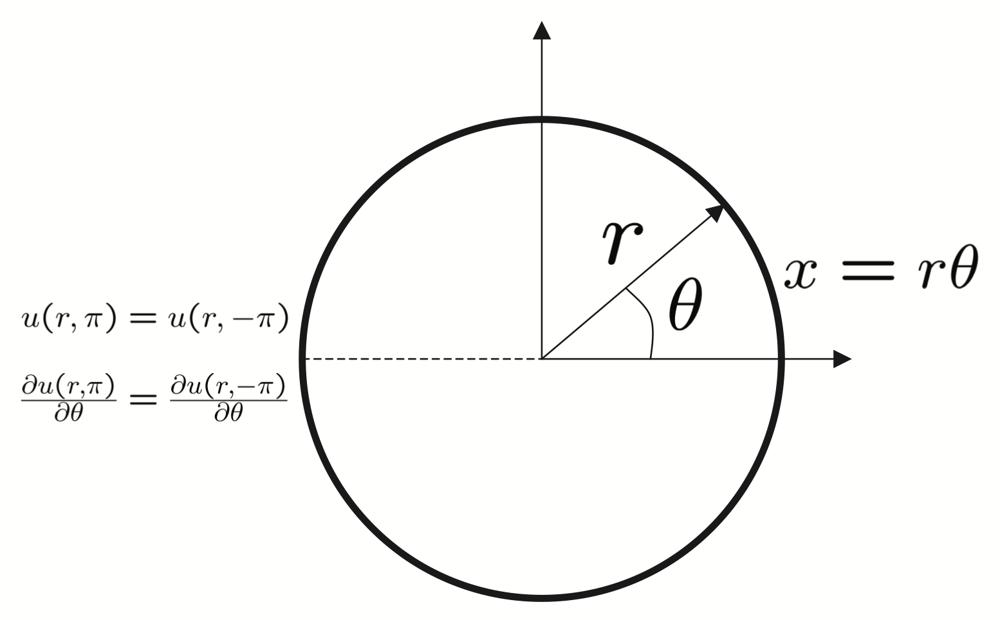

14. Heat Equation On A Circular Ring - Full Fourier Series#
In this lecture we use separation of variables to solve the heat
equation subject on a thin circular ring with periodic boundary
conditions. In this case we reduce the problem to expanding the
initial condition function \(f(x)\) in an infinite series of both
cosine and sine functions, which we refer to as the Full Range
Fourier Series.
Key Concepts
Heat Equation; Periodic Boundary
Conditions; separation of variables; Full Fourier Series.

Fig. 14.1 Consider a thin conducting ring with thermal conductivity
\(\alpha^2\) that has a given initial temperature distribution#
Physical Interpretation: Consider a thin circular
wire in which there is no radial temperature dependence, i.e.,
\(u(r,\theta)=u(\theta)\) so that \(\displaystyle\frac{\partial u}{\partial
r}=0\). In this case the polar Laplacian reduces to
and if we let \(x=r\theta\) then \(\frac{\partial^2 u}{\partial
(r\theta )^2}=u_{xx}\). In this case the heat distribution in the
ring is determined by the following initial value problem with
periodic boundary conditions
(14.7)#\[\begin{split}
\left.\begin{array}{lcl} X^{\prime\prime}+\lambda^2X&=&0\\
X(-L)&=&X(L)\\ X^\prime (-L)&=&X^\prime (L)\end{array}\right\}
\quad\begin{array}{l}\mbox{Eigenvalue Problem}\\
\mbox{look for $\lambda$ such that}\\
\mbox{nontrivial $x$ can be found.}\end{array}
\end{split}\]
As before we obtain expressions for the \(A_n\) and \(B_n\) by
projecting \(f(x)\) onto \(\displaystyle\sin\left(\frac{n\pi x}{L}\right)\) and
\(\displaystyle\cos\left(\frac{n\pi x}{L}\right)\).
Plugging these orthogonality conditions into (14.12) we obtain
(14.14)#\[\begin{split}
\begin{eqnarray}\left.\begin{array}{lcl}
A_0 &= &\displaystyle\frac{1}{2L}\int\limits_{-L}^L f(x)\, dx=\mbox{ average
value of $f(x)$ on $[-L,L]$}\\
A_n &= &\displaystyle\frac{1}{L}\int\limits_{-L}^Lf(x)\cos\left(\frac{n\pi
x}{L}\right)\, dx\mbox{ and
}B_n=\frac{1}{L}\int\limits_{-L}^Lf(x)\sin\left(\frac{n\pi
x}{L}\right)\, dx.\end{array}\right\} \label{eq:FourierCoefficients}
\end{eqnarray}
\end{split}\]
Observation 14.1
(14.11) and (14.14)
represent the full Fourier Series Expansion
for \(f(x)\) on the interval \([-L,L]\).
By defining \(\displaystyle a_n=\frac{1}{L}\int\limits_{-L}^L
f(x)\cos\left(\frac{n\pi x}{L}\right)\, dx=\left\{\begin{array}{c}
2A_0\\ \\ A_n\end{array}\right.\) and \(b_n=B_n\) the Fourier Series
(14.11) is often written in the form